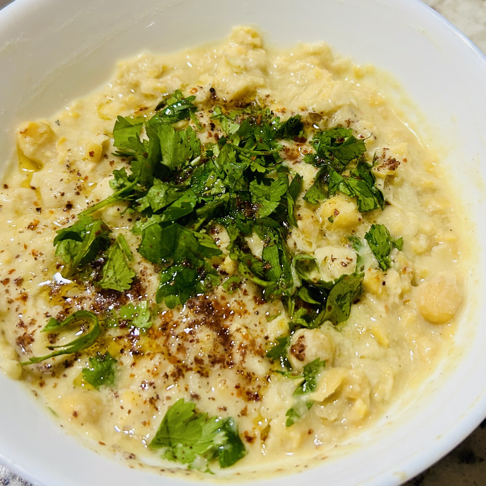
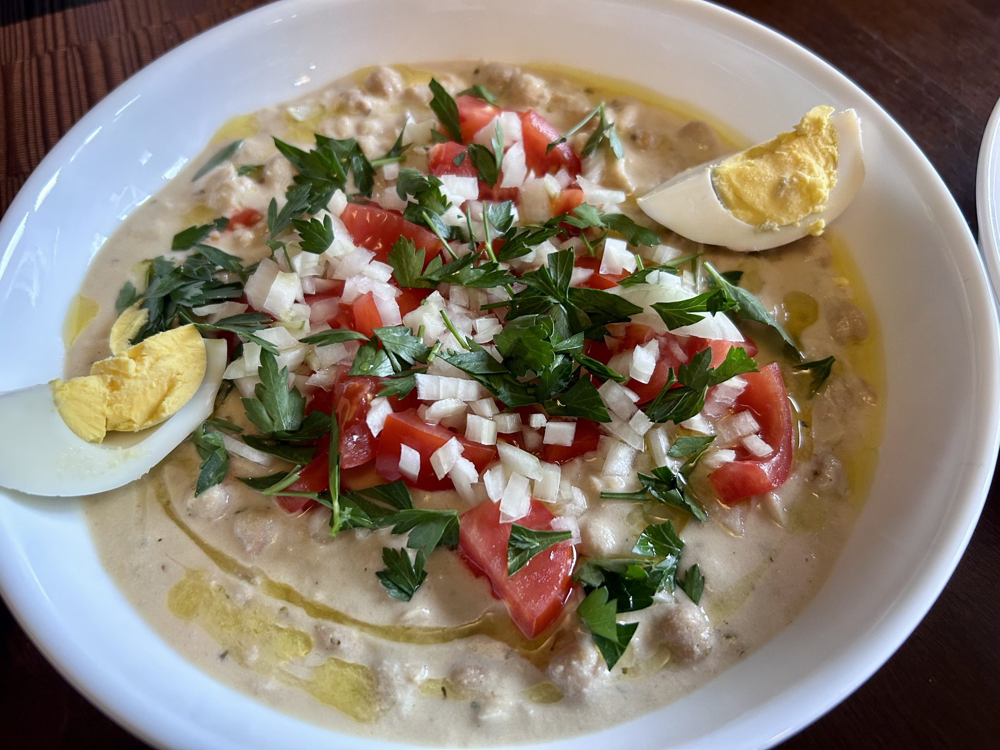

Side
Musabaha
Warm chickpeas, partly crushed rather than puréed, with tahini, lemon and spices — hummus with the texture left gloriously intact.


Ingredients
- 1 can chickpeas
- 1 garlic clove
- 1 tbsp olive oil
- 1 tbsp tahini
- 1 tsp ground cumin
- 1 tsp ground coriander
- 1 tbsp lemon juice, or to taste, plus zest
- 1/2 tsp salt
- Pinch of black pepper
Garnish
- Fresh coriander or parsley
- Sumac
- Aleppo pepper
- Pine nuts
- More lemon zest
- Tomato, onion and boiled egg, if desired
Method
- Warm the olive oil over low heat and add the smashed garlic.
- Add the chickpeas with roughly half their liquid.
- Cook gently while smashing most of the chickpeas, leaving enough whole pieces for a rustic texture.
- Stir in tahini, cumin, coriander, lemon, zest, salt and pepper and cook briefly.
- Garnish generously. For a tempered version, fry thinly sliced garlic and pine nuts separately in the oil and pour them over at the end.
Notes
Musabaha is the rustic end of the hummus spectrum: warm, loose and intentionally only partly crushed. I like taking it from a simple herb-and-sumac bowl all the way to a substantial plate with tomato, onion and egg.